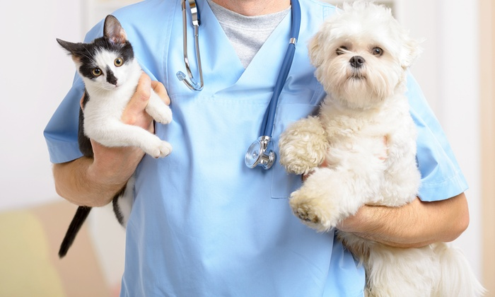
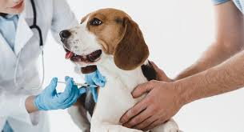
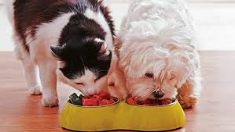

Servicio de consulta médica veterinaria a través de la cual se brinda un chequeo general de la mascota, diagnóstico y pruebas de laboratorio.
Se prestan todos los servicios de vacunación para su mascota, se realiza un chequeo a la mascota y medicación de acuerdo con la patología a tratar.
Alimento para perros y gatos. Las marcas más exclusivas de alimento creado especialmente para satisfacer necesidades de tu perro o gato
NOTICIAS
La última edición de este evento se realizó de forma online y ya fueron revelados los tiernos y ocurrentes ganadores...
Leer noticia completa >>Camilo Sánchez, cofundador de Laika, plataforma de productos para animales, dice que la firma ha crecido a triple dígito en la pandemia...
Leer noticia completa >>Exceso de orina, apetito desmesurado y sed constante son algunas de las señales de que su animal de compañía tiene problemas para procesar su glucosa...
Leer noticia completa >>En el Caribe en donde se presentan todos los años muchos huracanes, decenas de mascotas son dejadas atrás por sus dueños ante la tragedia...
Leer noticia completa >>EQUIPO
| Institución Educativa | Edad |
|---|---|
| Universidad Tecnológica de Pereira | 27 |
| Pasatiempo | Mascota |
|---|---|
| Leer | Perro |
| Institución Educativa | Edad |
|---|---|
| Universidad Tecnológica de Pereira | 39 |
| Pasatiempo | Mascota |
|---|---|
| Tocar guitarra | Perro |
| Institución Educativa | Edad |
|---|---|
| Universidad Tecnológica de Pereira | 32 |
| Pasatiempo | Mascota |
|---|---|
| Deportes | Loro |